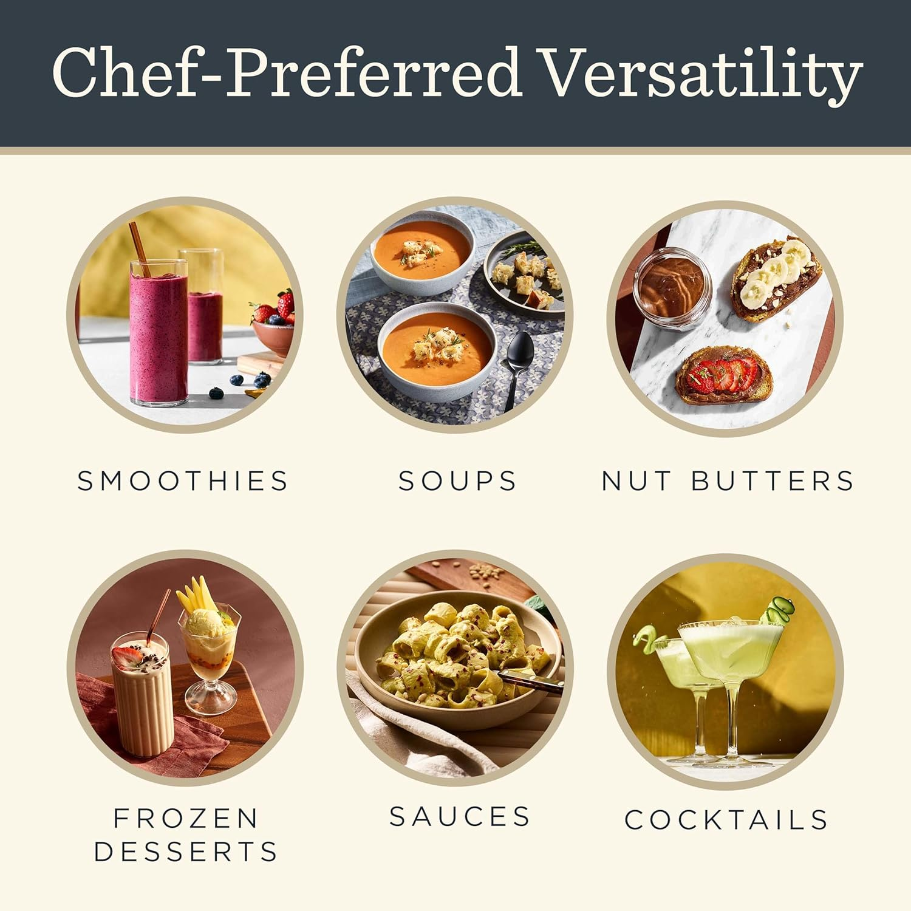

You've probably heard the word "inflammation" thrown around a lot lately — and for good reason. Chronic, low-grade inflammation has been linked to fatigue, brain fog, joint pain, skin flare-ups, and a long list of serious conditions including heart disease and type 2 diabetes. The good news? What you eat every single day is one of the most powerful levers you can pull.
You don't need a dramatic overhaul. Start with these seven foods, work them into your existing meals, and you'll be surprised how quickly your body responds.
"Let food be thy medicine. Your grocery cart is the most underrated health tool you own."
1. Fatty Fish 🐟
Salmon, mackerel, sardines, and tuna are loaded with omega-3 fatty acids — specifically EPA and DHA — which are among the most potent natural anti-inflammatories known to science. Aim for two servings per week. If fish isn't your thing, a quality omega-3 supplement works too. Your joints will quietly start thanking you.
2. Leafy Greens 🥬
Spinach, kale, Swiss chard, and arugula are packed with vitamin K, antioxidants, and polyphenols that fight inflammatory markers in the blood. The trick? Don't just eat them in salads — blend them into smoothies, sauté them with garlic, or throw a handful into scrambled eggs. If it's green and leafy, put it in everything.
3. Berries 🫐
Blueberries, strawberries, raspberries, and blackberries contain powerful antioxidants called anthocyanins, which give them their deep colour and their inflammation-fighting punch. A small handful daily — frozen counts just as much as fresh — is enough to make a measurable difference over time. Add them to your morning oats, your smoothie, or just eat them by the fistful like a bear preparing for winter.

4. Turmeric 🟡
Curcumin, the active compound in turmeric, has been studied extensively for its anti-inflammatory properties — comparable in some studies to certain anti-inflammatory drugs, without the side effects. The catch? It's poorly absorbed on its own. Always pair it with black pepper (which contains piperine and boosts absorption by up to 2,000%) and a source of fat. Add it to soups, golden milk, or scrambled eggs.
5. Olive Oil 🫒

🛒 Recommended Product
Vitamix 5200 Professional Blender
Makes smoothies, soups, and anti-inflammatory drinks in seconds. Self-cleaning, professional-grade, and built to last a lifetime.
Shop on Amazon →Affiliate link — we may earn a small commission at no cost to you.
Extra-virgin olive oil contains oleocanthal, a compound that works similarly to ibuprofen at a cellular level. This is the cornerstone of the Mediterranean diet — arguably the most well-researched eating pattern for longevity. Use it as your primary cooking fat, drizzle it over vegetables, and don't be shy with it. Good fat is your friend.
6. Nuts — Especially Walnuts 🥜
Walnuts in particular are rich in alpha-linolenic acid (ALA), a plant-based omega-3, along with vitamin E and polyphenols. A small handful (about 1 oz) daily is associated with lower levels of C-reactive protein — a key marker of inflammation. Almonds, pecans, and Brazil nuts are excellent runners-up.
7. Green Tea 🍵
Green tea contains EGCG (epigallocatechin gallate), a catechin that suppresses inflammatory chemicals in the body. Two to three cups per day is where the research shows the most benefit. It's also a gentler caffeine hit than coffee — enough to focus without the jitters. If you're replacing your afternoon coffee with green tea, you're making one of the quietest, most effective health upgrades there is.
"You don't have to eat perfectly. You just have to eat better more often than not."
Putting It All Together
The goal isn't to eat all seven every day — it's to crowd out the inflammatory stuff (ultra-processed foods, refined sugar, refined seed oils) by filling your plate with more of these. A salmon bowl with wilted spinach, olive oil, turmeric rice, and walnuts with a side of green tea and berries for dessert? That's not a diet. That's a very enjoyable Tuesday dinner.
Start with one swap this week. Then another. The cumulative effect is what changes your life — not the dramatic overnight overhaul.
References
- Calder PC. "Omega-3 fatty acids and inflammatory processes." Nutrients. 2010;2(3):355–374. doi:10.3390/nu2030355
- Giugliano D, Ceriello A, Esposito K. "The effects of diet on inflammation." Journal of the American College of Cardiology. 2006;48(4):677–685.
- Gupta SC, et al. "Therapeutic roles of curcumin: Lessons learned from clinical trials." AAPS Journal. 2013;15(1):195–218.
- Gorzynik-Debicka M, et al. "Potential health benefits of olive oil and plant polyphenols." International Journal of Molecular Sciences. 2018;19(3):686.
- Huang H, et al. "Tea consumption and longitudinal change in high-density lipoprotein cholesterol concentration in Chinese adults." Journal of the American Heart Association. 2018;7(3):e008814.
- Boeing H, et al. "Critical review: vegetables and fruit in the prevention of chronic diseases." European Journal of Nutrition. 2012;51(6):637–663.
Level Up Your Kitchen 🥗
The right tools make healthy eating faster and easier. Check out our top picks for the Eat Smart category.
Browse Eat Smart Products